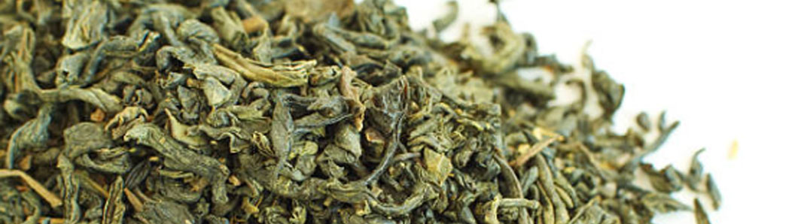

GIỚI THIỆU
Bằng sự nỗ nực không ngừng, trải qua hơn 10 năm xây dụng và phát triển trong lĩnh vục trà Thái Nguyên, tháng 06/2017,
công ty TNNHH Tân Cương Xanh chính thức kỉ niệm 20 năm thành lập (1997-2017). Trong 20 năm qua, thương hiệu trà
Tân Cương Xanh đã ngày càng đi sâu vào thị trường trà Việt nói riêng và thể giới đổ uống nói chung.
Với mục tiêu mang đến thị trường một sản phẩm trà mang thuơng hiệu Thái Nguyên “sạch" chính hiệu cũng như sự trăn
trở về sự phát triển của thị trường chè Việt Nam, cách đây 10 năm trên thị trường trà Việt, người con ưu tú đó đã thành
lập một công ty chuyên sản xuất và phân phối về trà sạch mang thương hiệu “Tân Cương Xanh".
Với phương châm "Uy tín chất lượng sản phẩm là mục tiêu số 1", Công ty TNHH Tân Cương Xanh đã luôn nỗ lực cả về
nhân lực, vật lực, xây dụng uy tín thương hiệu, niềm tin với khách hàng thông qua những sản phẩm của công ty. Cùng với
sự tín nhiệm của khách hàng vào sản phẩm của Tân Cương Xanh trong thời gian qua, Tân Cương Xanh đã không những
phát triển thành một công ty vững mạnh trong ngành trà thái nguyên ngon Việt Nam đạt được Cúp Vàng thương hiệu
Doanh Nhân Tinh hoa Đất Việt và Thương hiệu vàng Uy tín... Từ đó tạo nên động lực để Tân Cương Xanh phấn đấu để
trở thành một trong những tập đoàn sản xuất, chế biến và cung cấp trà hàng đầu Việt Nam và thế giới
Sản Phẩm của công ty đạt đầy đủ tiêu chuẩn vệ sinh an toàn của Chi Cục Vệ Sinh An Toàn Thực Phẩm Của Thái Nguyên
- Của chi cục Hà nội. Đạt tiêu chuẩn xuất khấu Chicago - Hoa Kì. Trà Tân Cương một loại đổ uống nổi tiếng trong ẩm
thực của người Việt Nam có hương thơm cốm diu dàng đặc trưng, màu nước xanh trong, sánh và bền, vị chát dịu, uống
xong có hậu ngọt lắng sâu trong vị giác người thưởng thức. Sản phẩm trà tân cuơng thái nguyên của nhà máy có tác dụng
giải nhiệt, giảm béo, trị tăng huyết áp và phòng chống phóng xạ, chống ung thư... Với phương châm "Uy tín chất lượng sản
phẩm là mục tiêu số 1”, Công ty TNHH Tân Cương Xanh không ngừng phẩn đấu để trở thành một trong những tập đoàn
sản xuất, chế biển và cung cấp trà hàng đầu Việt Nam và thế giới


7999.999.999
trasenbachdiep@gmail.com
Số 12, Quảng An, Hồ Tây, Hà Nội